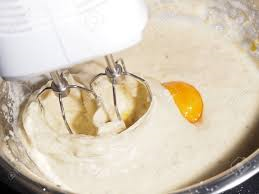
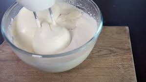
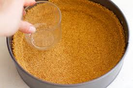

This is my favorite recipe for New York-style cheesecake, and includes a great technique for letting the citrus-kissed cake finish in the oven, so that no crack forms when the cake cools. This New York style Cheesecake is topped with delicious strawberries. The cramcracker crust is made from scratch and it's soft and topped with a huge layer of creamy cheesecake.
The tools used to prepare a cheesecake are as followed:
After creaming together butter and sugar, the next ingredient in many cookie recipes is eggs. They should be added one at a time, each one thoroughly beaten in before the next is added, to allow the creamed butter/sugar mixture to most effectively retain its trapped air. Be sure to scrape the sides of the bowl so all of the butter/sugar mixture is incorporated..
• Large eggs • White sugar: granulated cane (not beet sugar) • Brown sugar: dark or light • Butter: unsalted American-style (not European) • Milk: whole, 2%, 1%, or skim • Salt: table salt • Cocoa powder: unsweetened; either natural or Dutch process • Vegetable oil: a neutral flavored oil like canola, sunflower, safflower, or a blend • Buttermilk: full-fat, reduced-fat, low-fat, or nonfat • Heavy cream or whipping cream: at least 30% milk fat • Baking powder: double acting • Yogurt: traditional or Greek-style, low-fat or full-fat • Sour cream: low-fat or full-fat • Light cream, half & half: interchangeable Egg temperature: If the recipe calls for room-temperature eggs and yours are cold from the fridge, place them in a bowl of hot tap water for 10 minutes before using. Butter temperature, salted/unsalted butter: If the recipe calls for room-temperature butter and yours is cold from the fridge, place wrapped stick in a bowl of barely warm (73°F) tap water for 10 to 15 minutes before using. If recipe calls for unsalted butter and you're using salted, reduce the added salt in the recipe by 1/4 teaspoon for every 8 tablespoons of butter used. Salt: For best results, use a standard-grain (table) salt; large-grain kosher and coarse-grain sea salt measure differently than table salt. Yogurt: You may wonder, why don't we call for nonfat yogurt or sour cream? Because compared to milk/buttermilk, these ingredients are regularly used for the fat they add. Going down to "light" or low-fat is enough compromise; going nonfat pretty severely affects the recipe.
  